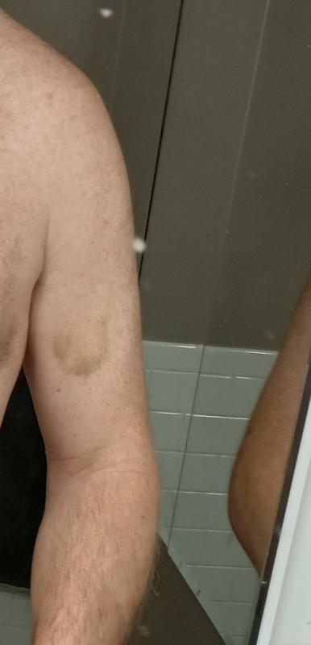
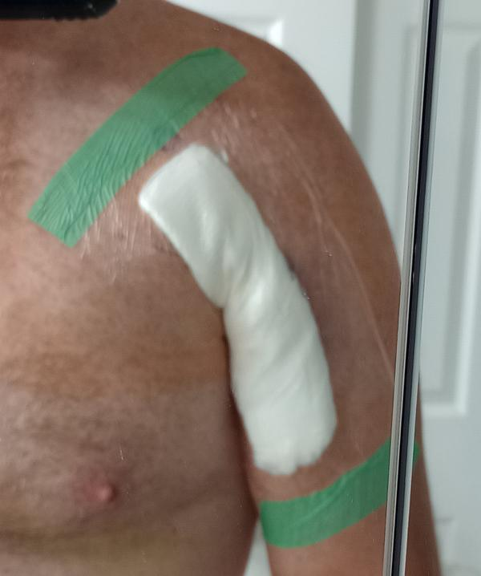
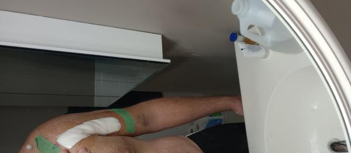
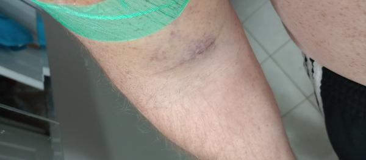
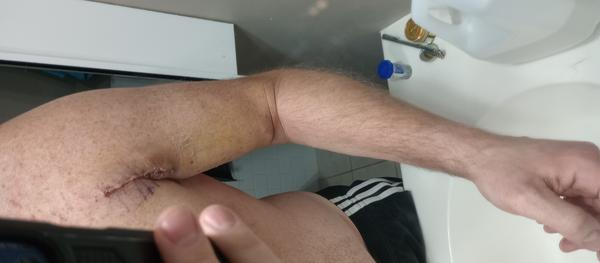
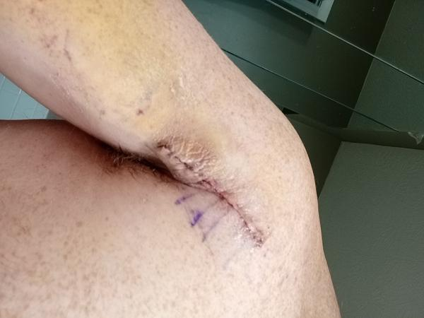

- Wed 08 March 2023
- Injury
- Brad Ricketts
- #pectoral-tear, #injury
Introduction
Hi! Thanks to the lack of information on the internet regardaing Pectoral Myotendious Junction tears, I decided I would write this page about my experiences in the treatment and rehab of this injury. Please note that I am not a medical professionaal and I am not qualified to give any medical advice in any way. I'm just trying to put together the information that is out there for this injury in one spot in case it might be useful to someone that has the same injury that I did.
Here are a couple of papers from the National Institute of Health regarding the evaluation and treatment of this injury:
A general overview on the common evaluation and treatment of this injury
A case report that was done on an athlete that had this injury
Background On My Injury
I live in a suburb of Indianapolis, I'm 43 years old and have been lifting for about 10 years, though over the last 5 years I had not been very consistent. After getting to 245lbs in late 2022 I got mad and decided to do something about it. Over the next few months I made excellent progress, until January 27th 2023.
I generally workout in the mornings, and had to get up earlier than usual to get my work out in as my son needed to get to school early. I ended up skipping most of my warmup as I was in a hurry (terrible idea) and it was 20 degrees in my garage. I was doing bench press, and worked up to around 200lbs when I felt what seemed like a zipper open under my skin. My right arm went completely numb, thankfully I always have the safety pins on my power rack set so I was able to dump the weight without issue.
Evaluation
Despite the injury I didn't have any bruising until 2 days later. That's when I went to the urgent care clinic who immediately referred me to Doctor Scott Smith at the Riverview Health Physicians Orthopedics & Sports Medicine office at the Westfield, IN Riverview Hospital. After having an MRI done it was found that I had a Pectoral Myotendius Junction tear.
This means that my Pectoralis Major muscle had torn from the tendon, which is far less common than the tendon tearing from the bone.
Here is the text of my MRI (unforunately I do not have access to the imaging):
EXAM: MRI CHEST, ATTENTION RIGHT PECTORALIS, WITHOUT CONTRAST
CLINICAL INFORMATION: Male, 42 years old. Pectoralis injury lifting weights January 27, 2023.
TECHNICAL: All sequences were performed on a high-field scanner. Coronal T1-weighted and inversion recovery, axial T1-weighted, T2-weighted fast spin echo with fat saturation, and axial gradient-echo, and sagittal T2-weighted sequences were performed through the right pectoralis muscle.
INTERPRETATION:
There has been a myotendinous junction tear of the right pectoralis major with muscular retraction of approximately 5 cm. Hemorrhage and edema are present. A 16 mm intact tendinous attachment is seen inserting on the medial humerus.
There is cystic change in the posterolateral aspect of the humeral head.
IMPRESSION: 1. Tear of the myotendinous junction of the pectoralis major with 5 cm of retraction and associated hemorrhage and edema. 2. Distal tendinous insertion on the medial humerus is intact.
I do not have many pictures of the injured area as I didn't think to take them, but in my case I did not have much bruising in the injured area. This is the only picture I could find:

Treatment
According to Doctor Smith since my muscle had torn away from the tendon a direct suture repair (meaning stitching the muscle back to the tendon) could not be safely done as eventually the stictches would break under the strain. Therefore I had two treatment possibilties:
-
Leave the injury as is and go on with my life. This is a viable option for people who are not very active and have no wish to do weight lifting or engage in combat sports as normal light use of the arm is still possible. There would be lump in the chest muscle, but over time the pain would fade. However, this meant that future use of the arm would be limited, and there was/is a possibility of the injury tearing further.
-
Surgical repair. Since the injured muscle cannot be attached to the torn tendon, a reconstructive procedure would be done by taking a tendon from a cadaver (in my case an Achillies tendon), attaching the tendon to the damaged muscle, also incorporating the old tendon into the new one, then connecting the new tendon to the humerous bone by means of some form of connector drilled into the bone.
Here is an article, also from the National Institue of Health, giving an example of this procedure. Example procedure, WARNING PICTURES OF SURGERY ARE CONTAINED WITHIN
I opted for the surgery, which was scheduled for 2 days later on February 9th 2023 also at the Riverview Hospital in Westfield, IN.
No real preparation was required prior to the surgery other than fasting for 12 hours and making sure I did not drink water at least 8 hours prior to the surgery. My pre-surgical instructions did state this, but when I got up in the morning I did my usual routine of drinking a bottle of water immediately after waking. DON'T BE LIKE ME KIDS. According to the anesthesiologist there is a possibility of pneumonia developing during the procedure if the patient vomits up the water they drink while the surgery is occuring. I did inform the anesthesiologist of my mistake, and after rightfully chewing me out she said she would keep an eye on things.
I was given a pair of highly stylish compression socks that would reach to my mid thigh to help prevent blood clots, which I would then wear for 2 days. Prior to getting into my gown and the fancy socks I had to wipe down with antiseptic wipes over my whole body.
An IV was started in my left hand, then a nerve block was applied to the surgical area, the area for the surgery was marked by the doctor, and I was wheeled into surgery. The nerve block was to help with issues with pain following the surgery, and I found it wore off completely on the 3rd day.
In my surgery the Achilles tendon was grafted into my pectoral muscle and attached to my right arm's humeros bone using 3 "pectoral buttons" manufacturered by Arthrex.
Arthrex's product page for the kit used
Arthrex's information page on the pectoral button including demonstration videos
Following the surgery I was given a sling, and told that I would need to wear the sling for 4-6 weeks. However, I had full use of the other arm, so I was not completely dehabilitated.
Product page for the sling I was fitted with, Donjoy Ultrasling Pro
I was also perscribed OxyCodone for the pain, an anti-inflamatory called Toradol, and an anti-nausea medication if needed following the surgery. In my case I used the OxyCodone once to help sleep the night of the surgery and never needed it again. The Toradol I took for 4 days, then used Ibuprofen for another 3 days and did not need it afterwards. The anti-nausea medication wasn't used as I didn't need it.
I found the pain to be extremely manageable, and other than some discomfort while sleeping I rarely found myself needing to take pain medication. I was able to go on a 2 mile walk the day after the surgery, and other than being tired I found I didn't have any issues.
Please note that being able to stay with someone that can help you is extremely helpful, as I found myself having difficulty with various things as I am very right hand dominant so I've had to learn the hard way to make due with my left hand. My wife was absolutely wonderful during all of this.
Post Surgery and Rehabilitation
Following surgery the incision was covered in a gauze pad which was held in place by a plastic covering that looked like sticky Saran Warp. Thanks to this covering I was able to shower and get the area wet without worrying about getting the bandage wet. In days following the surgery I had some bruising and soreness just above the elbow at the bottom of the bicep, which I'm told is common just from gravity causing the blood to pool there following surgery.
  
Being that I'm right handed I was forced to do everything with my left hand, which was perhaps one of the more frustrating aspects of the procedure. I found that eating, wiping my butt, typing, and brushing my teeth the most difficult things to do about using my left hand. Thankfully for my rectal cleanliness I was able to learn to wipe effectively, and my eating habits eventually morphed into awkward shoveling of food into my face. I'm sure I looked ridiculous, but I got fed! Brushing my teeth on the other hand remains something that I simply cannot do with my left hand, but I found that an electric toothbrush has worked quite well in the mean time.
I was able to return to work the Monday following my surgery 4 days later, though I was extremely limited in what I was able to do physically. Thankfully I didn't have any tasks coming up that required a lot of lifting, so the biggest restriction I had was not being able to type. I found over the course of several days that I could position my keyboard in such a way that I wouldn't have to lift my right arm much, so I was able to release part of the sling so I could type.
Prior to the surgery I did a fair amount of research in how to help prevent muscular atrophy, and I found some interesting case studies that I believe have helped me with preventing some atrophy, helped accelerate my healing somewhat (note, this is completely subjective and I have no proof whatsoever, it's just a suspicion), and may help with my rehabilitation in the future.
- If one limb is incapacitated you can help prevent the loss of strength and muscular size by exercising the other limb. Here are two articles talking about this topic, each of with has the academic sources sited: Science Daily - Exercising one arm has twice the benefits as well as Mountain Tactical - Arm or Leg Injury? Train the Other Limb to Build Strength in Both
I ended up designing my own workout program around this idea, which I've detailed below.
-
Increasing your protein intake immediately prior to surgery and following surgery can help prevent the loss of muscular size and strength following surgery. American Academy of Orthopaedic Surgeons - Preventing muscle loss after surgery I did not discover this research in enough time prior to surgery, otherwise I would have followed the advice of protein loading in the days leading up to it. I did however start having 2 protein shakes per day as well as making sure a full serving a protein was present for every meal, and attempting to get as many protein snacks as possible. I addition, prior to the injury I had cut out all alcohol, sugar, and processed carbohydrates from my diet so I kept this up following the surgery as well.
-
Following the surgery I started supplementing with collagen peptides after reading from various sources about the aid in tendon repair that supplementing with collagen peptides can bring. Here is an example article with sources
I have no idea if any of the above was helpful in my recovery or not, but I suspect it was. Prior to my injury I was in the process of losing weight, and I decided to continue my diet but with some alterations. Previously I was skipping breakfast, waiting to eat around noon. Some people choose to call this intermittent fasting, I just called it waiting until lunchtime. There are times when I get sick of the constant labels that people want to put on things, if feels like they're either trying to sell me something or prove they're right. My meals consisted of basically a meat, usually beef or chicken, rice, and a ton of vegetables. For snacks I would either have some nuts or a salad. Come dinner time I would just eat whatever my wife or I cooked, but we eat pretty healthy generally. My weight was around 222lbs right after the surgery, and as of the time of writing this I'm currently around 212lbs, with a goal weight of 205 (I'm not holding to that goal too much, I think once I get below 210lbs the scale won't matter that much).
The only real change that I've made to my diet has been the inclusion of protein supplements and collagen peptides. This appears to have paid dividends becaues the atrophy in my right arm has not been nearly what I thought it would be, though muscle loss is probably inevitable in an immobile limb. However, my "left arm only" training theory has appeared to have worked as the strength in my right arm has held pretty well.
My first physical therapy appointment was on Feburary 17th, during which my therapist had me conduct some movements called pendulums. Basically you lean forward, supporting your weight with your good arm on a table or counter. You then swing your repaired arm using your body not by moving the arm. This video does a pretty good job explaining the exercises:
However, there were no other physical therapy appointments until March 9th as the therapist would not move foward with therapy until I was cleared by the surgeon.
My bandages were removed on Feburary 22nd, and the incision was very clean with no drainage or infection. My stitches were the type that are absorded by the body, so they did not need to be removed. In addition, the incision area was covered by a glue protectant, which is apparently pretty close to super glue.
 
Over time the glue has fallen off, and the scar has become less and less noticeable.
Following getting the bandages removed I was cleared by the doctor to begin physical therapy. These consisted of very simple movements, the most significant of which was a movement in which I sat in a chair next to a table, place my hand on a towel on the table, and slide my hand forward on the table as far as I could without pain. I wish I could find a video of the movement.
That's my progress so far, I will be showing more of my progress in later posts. Thanks for reading, and I hope it was helpful to you!